Informatique pour tous

Sébastien NEDJAR
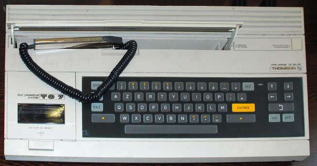
Points communs de toutes ces machines :
- Elle sont capables de calculer.
- Les opérations élémentaires sont simples et peu nombreuses.
- La composition des opérations de base permet de créer des comportements complexes.
- Leurs comportements sont modifiables à l’infini.
Aujourd’hui, les ordinateurs sont présents dans tous les moments de notre vie :
- Dans notre travail
- Dans notre quotidien (smartphone, tablette, télé, voiture, …)
- Dans nos écoles.
Depuis 40 ans, les gouvernements successifs proposent régulièrement des plans pour le numérique à l’école. Mais dans la réalité qu’en est-il ?
Pourquoi former nos enfants à l’informatique :
1. L’économie en a besoin
2. Cela développe une nouvelle forme de pensée
3. Il ne faut pas abandonner le pouvoir aux machines (et encore moins à ceux qui les maîtrisent).
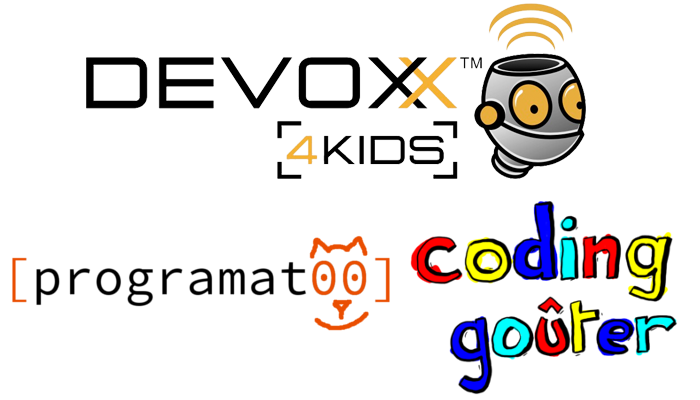
“Les bons artistes copient, les grands artistes volent” Picasso
“Nous n’avons jamais eu honte de voler les excellentes idées” Steve Jobs
L’humanité a toujours innové en commençant par copier. Exemples :
- Le feu
- La pierre taillée
- La roue
Avec Internet la connaissance est accessible à tous. Et qu’y a t’il de mieux pour apprendre que de faire par soi même?
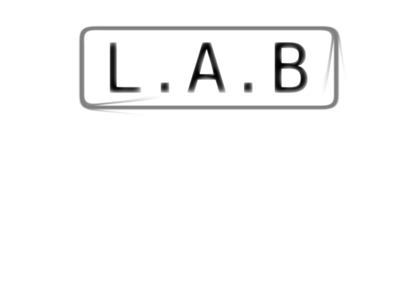
Pour avoir plus d’info :
- Twitter : @LabAixBidouille
- Github : https://github.com/LabAixBidouille
- Google groups : lab-aix@googlegroups.com
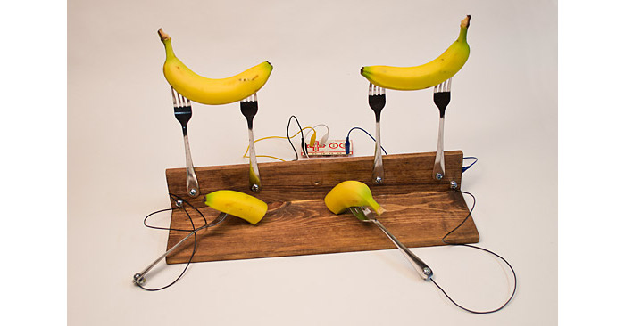
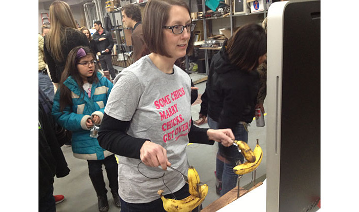
Brique de base pour le prototypage électronique. 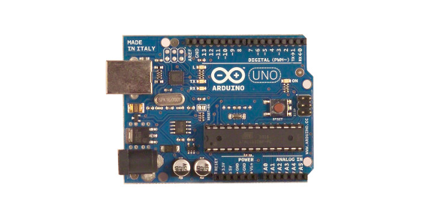
Brique de base pour le prototypage électronique. 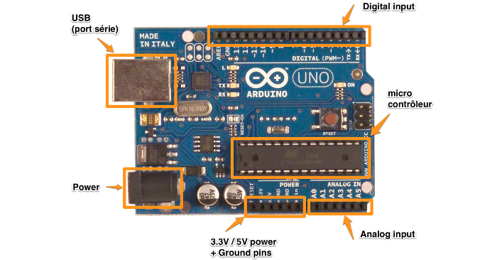
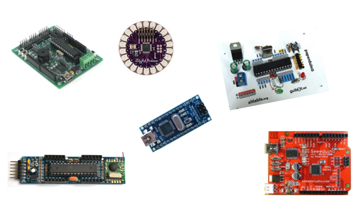
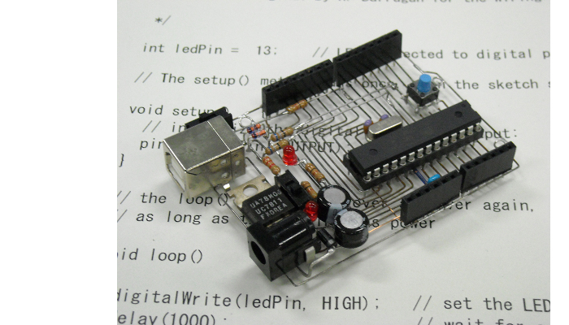
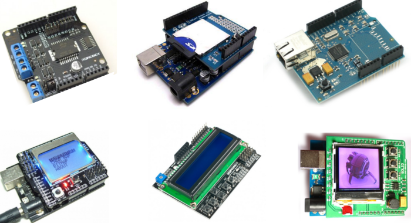
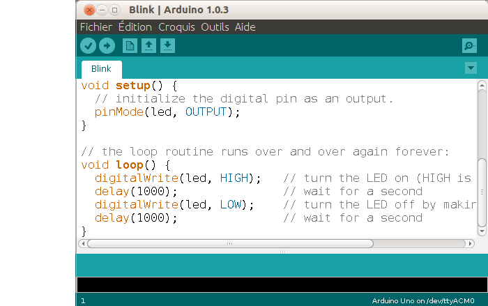
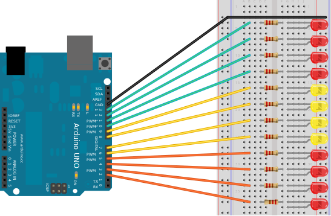